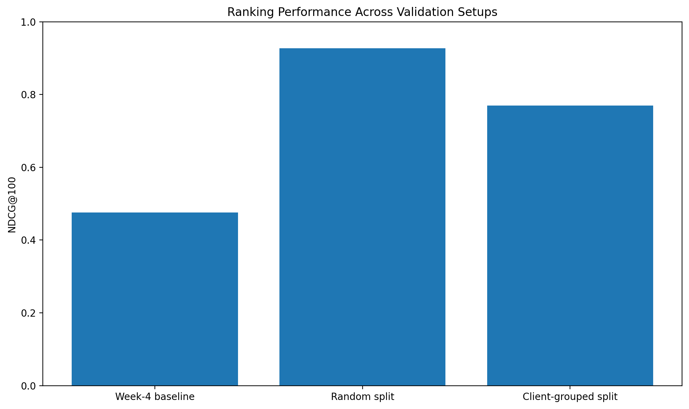
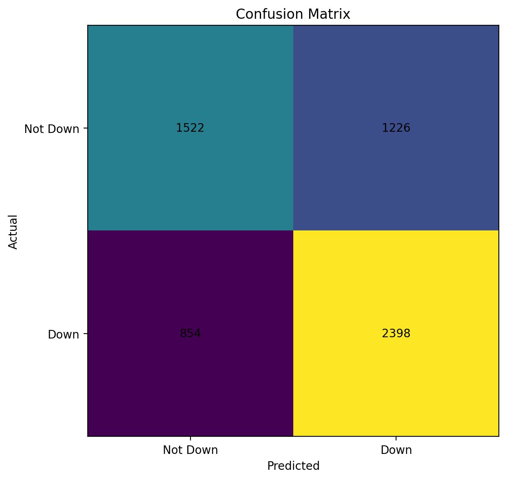
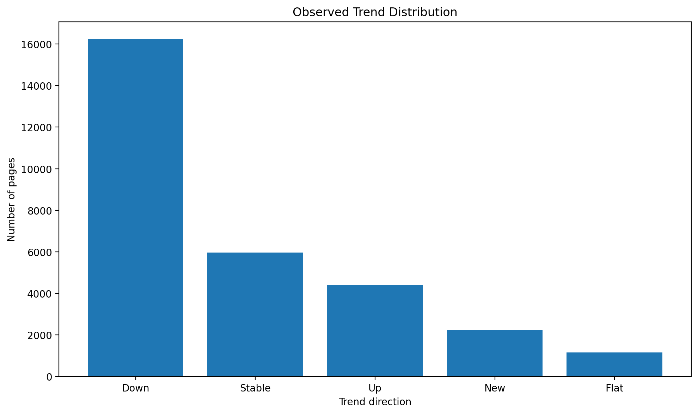

Features
impressions_90d, clicks_90d, avg_position, days_since_last_update
ML Capstone Research · Decision Support
A decision-support approach for prioritizing content pages for human review
This study asks whether search-performance signals can help prioritize content pages that show signs of decline. Using the FlyRank internship modeling dataset, the analysis evaluates search-performance features including impressions, clicks, average position, and days since last update. A Random Forest model was compared with a Week-4 rule-based baseline using NDCG@100. The model achieved an NDCG@100 of 0.926767 on a random split and 0.769499 on a client-grouped split, compared with 0.475782 for the baseline. These results suggest that the model can support prioritization of pages for human review, but they do not establish that refreshing a page will cause better future performance.
Content teams may have many pages to review but limited time to decide which pages deserve attention first. The practical question in this project is whether observed search-performance signals can be used to rank pages so that potentially declining content can be reviewed earlier.
The goal is therefore not to automatically rewrite or publish content. Instead, the model is treated as a decision-support tool that can help reduce a large set of pages to a more manageable review queue.
The analysis uses the FlyRank internship dataset. The modeling work
uses a 30,000-row dataset with 44 columns, while the broader warehouse
exploration included the fact_content_query_90d release
containing 2,414,248 rows and 21 fields.
The warehouse table represents content-query observations over a 90-day window. The observed window in the inspected warehouse release runs from April 2, 2026 to June 30, 2026.
Client, content, and query identifiers were treated as identifiers and were not used as model features. The modeling features were selected to describe observed search performance rather than expose private identifiers or raw queries.
The analysis does not include private client names, raw search queries, or other identifying information in this public paper.
The final model used four features:
impressions_90dclicks_90davg_positiondays_since_last_update
The target was trend_direction. The modeling dataset
contained five observed trend classes: down, stable, up, new, and flat.
The Week-4 rule-based baseline achieved an NDCG@100 of 0.475782. The Random Forest model was evaluated against this baseline using the same ranking metric.
Two validation setups were examined. The random split produced an NDCG@100 of 0.926767. A client-grouped split, designed to provide a more conservative test on unseen clients, produced an NDCG@100 of 0.769499.
The final feature audit found no target-derived columns accidentally included as model features, and client identifiers were not used as model features. Temporal leakage could not be fully verified from the available starter dataset, so the results are framed as directional rather than causal evidence.
The model improved substantially over the Week-4 baseline on both validation setups. However, the grouped result was lower than the random-split result, which makes it the more cautious estimate of performance.
| Evaluation | NDCG@100 |
|---|---|
| Week-4 rule baseline | 0.475782 |
| Random-split Random Forest | 0.926767 |
| Client-grouped Random Forest | 0.769499 |

Ranking performance across the baseline, random split, and client-grouped validation setups.
Takeaway: The Random Forest ranked declining content better than the baseline, but its score dropped from 0.927 on the random split to 0.769 on the client-grouped split.

Confusion matrix from the original random-split validation result.
Takeaway: The model correctly identified 2,398 of the 3,252 declining pages in this validation result, while missing 854 and incorrectly flagging 1,226 pages that were not classified as declining.

Distribution of the five observed trend classes in the 30,000-row modeling dataset.
Takeaway: Declining pages were the largest group in the modeling dataset, with 16,262 of 30,000 pages classified as down.
Pages near the top of the model ranking should receive human review before lower-priority pages.
A high score does not explain why performance changed, so reviewers should investigate the available evidence before deciding on an action.
The model should not automatically rewrite, publish, or delete content.
A lower model score should not automatically mean that a page is ignored.
Future evaluation should include unseen clients and, where possible, genuinely time-separated validation data.
Recommended action flow:
Model ranking → human review → investigate the cause →
decide whether a refresh is appropriate → measure the outcome.
The original random train/validation split may provide an optimistic estimate because pages from the same clients can appear in both training and validation. The client-grouped evaluation provides a more conservative result.
Temporal leakage could not be fully verified from the available starter dataset. This means the analysis cannot claim that temporal separation has been completely established.
The data describes observed search performance but does not explain why performance changed. Factors such as content quality, competitors, seasonality, or search-engine changes are not established as causes by this analysis.
Most importantly, this study does not prove that refreshing content will improve future search performance. The model should therefore be used for decision support and human review rather than automatic publishing, rewriting, or deletion.
The analysis is backed by the project repository and the capstone notebook used to organize the research question, data, methodology, validation, results, limitations, and recommendations.
work/notebooks/capstone.ipynb
work/figures/
The reported metrics are NDCG@100 values from the documented validation setups. The random split and client-grouped split should be interpreted separately rather than treated as interchangeable estimates.
Built on the FlyRank ML Internship dataset.
Data source: flyrank.ai